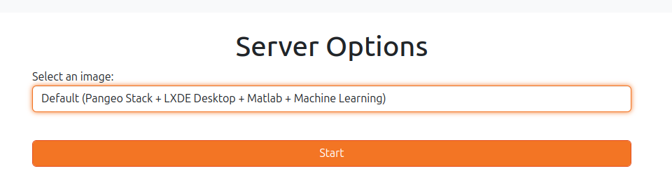
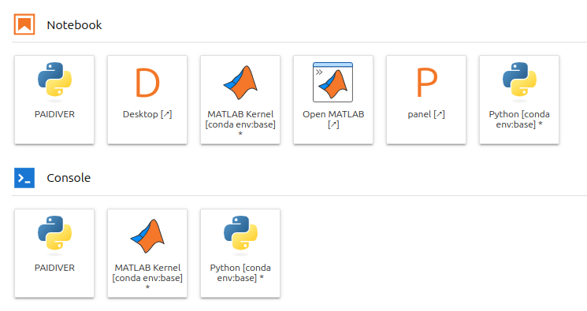
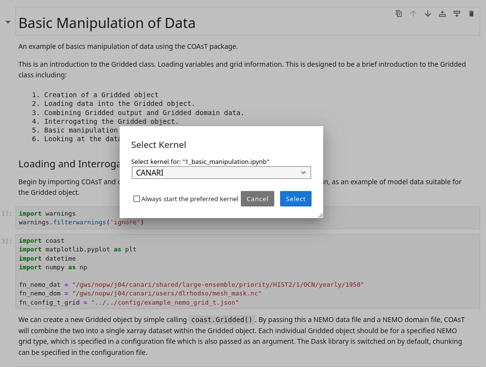

Workshop
This page provides all the necessary setup instructions to help you make the most of the workshop. It also includes details about the dataset we will be using and the example notebooks that will guide our exercises.
Coding environment
To ensure a smooth experience, we have set up a ready-to-use environment where all dependencies and example datasets are pre-installed. This means you won’t need to worry about installing anything manually—everything is configured and ready to go.
The environment is hosted on notebook servers, which are remote computing resources designed to facilitate interactive coding. These servers allow users to create, edit, and run Jupyter notebooks, which contain text, code, equations, and visualizations. Running code on a remote notebook server means computations will be performed on a powerful server rather than your local computer. This provides faster processing, access to specialized resources, and the flexibility to work from anywhere with an internet connection.
For this workshop, we will be using two remote services:
- NOC's Data Science Platform (DSP) – for NOC staff
- JASMIN – for external users
Datasets
Greater Haig Fras seafloor imagery
- Used in: Tutorial 1
- Collection: Greater Haig Fras, UK (2012)
- Equipment: NOC AUV6000 camera system on the Autosub6000 autonomous underwater vehicle
- Metadata: iFDO
Autosub6000 photographed the seabed during mission 58 of RRS Discovery cruises 377/8. The workshop set contains 99 mosaicked image tiles from four survey lines; each tile combines five consecutive photographs.
The survey was the first in a series conducted while Greater Haig Fras was under consideration for Marine Conservation Zone status. It formed part of the Defra-funded project Investigating the feasibility of utilizing AUV and Glider technology for mapping and monitoring of the UK MPA network (MB0118).


Sources: BODC survey imagery, Benoist et al. (2023), companion mosaicked image tiles, Ruhl (2013), cruise report, and Wynn et al. (2012), Defra project MB0118 final report.
DY157 plankton imagery
- Used in: Tutorial 3
- Collection: DY157 RRS Discovery cruise (2023)
- Equipment: Red camera frame deployed vertically by winch
- Metadata: CSV
The camera recorded pelagic plankton in the water column. The exercises focus on uneven illumination and low contrast, both of which can make faint structures difficult to see.

Sources: DY157 cruise inventory, Paidiverpy example datasets.
JNCC East of Haig Fras seabed imagery
- Used in: Tutorials 2 and 4
- Collection: East of Haig Fras Marine Conservation Zone, UK (2013)
- Equipment: Canon PowerShot G5 on a drop-camera system aboard RV Cefas Endeavour
- Metadata: iFDO
The workshop uses 374 seabed photographs collected at 19 stations during the CEND0513 survey by the Joint Nature Conservation Committee (JNCC) and Cefas. This is a separate collection from the 2012 Greater Haig Fras survey. Tutorial 4 opens five images from the set for its custom and library algorithm exercises.
Sources: JNCC image collection and CEND0513 survey report. The images are credited to JNCC and Cefas and licensed under the Open Government Licence v3.0.
Tutorials
| Tutorial | What you will do |
|---|---|
| 1. Introduction | Run a small Haig Fras pipeline and compare the opened, grayscale, and smoothed images. |
| 2. Benthic imagery | Read the JNCC iFDO metadata, select an acquisition interval, and evaluate contrast, sharpening, and cropping. |
| 3. Pelagic imagery | Compare illumination correction, local contrast, and gentle smoothing on plankton images. |
| 4. Custom and library algorithms | Run a Python intensity inversion and an OpenCV median filter on a benthic dataset, then compare the same image across steps. |
These example datasets provide a foundation for users to explore the functionalities of the Paidiverpy package and conduct their analyses effectively.
DSP Documentation
Logging into the DSP
To access the DSP environment, follow these steps:
- Open your web browser and navigate to https://notebooks.noc.ac.uk/.
- Log in using your NOC Southampton UNIX username and password.
- If you do not have an account or have forgotten your credentials, please ask us for a temporary login details.
- Select an image to run. You can choose the default option and click Start.

- Once started, the Jupyter Notebook interface will appear. You can create a new notebook or open a terminal.
Your DSP home directory and group workspaces will be accessible from within the notebook environment.
Setting up the PAIDIVERPY Conda Environment
A preconfigured PAIDIVERPY Conda environment is available for use. This environment includes all necessary packages and dependencies and is built using the environment.yml file from the Paidiverpy GitHub repository.
Since the environment is stored in a non-standard location (/groups/paidiver/paidiver-env), Jupyter will not detect it automatically. Follow these steps to set it up:
1. Open a Terminal
From the Jupyter launcher, click the Terminal icon.
2. Register the PAIDIVER Kernel
Run the following command:
mamba run -p /groups/paidiver/paidiver-env python -m ipykernel install --user --name Paidiver
3. Troubleshooting
If the command above fails, try running these commands first, then repeat step 2:
mamba init
exec bash
4. Download the example data
Run the commands below:
cd
micromamba activate /groups/paidiver/paidiver-env
wget https://paidiver-o.s3-ext.jc.rl.ac.uk/paidiverpy/tutorials.zip
unzip tutorials.zip -d paidiver/
Then check if the tutorials are available by running:
ls paidiver/tutorials
You should see as output:
1-introduction.ipynb 2-benthic.ipynb 3-pelagic.ipynb 4-custom-and-library.ipynb config custom_algorithm images metadata
5. Launch Jupyter with the Paidiver environment
- Open a new Jupyter launcher by clicking File > New Launcher.
- A new notebook and console option named Paidiver should now be available (this may take about a minute to appear):

- Click on Paidiver to open a notebook.6. Verify the Installation
Run the following command in the first cell:
import paidiverpy
paidiverpy.__version__
The expected version is 0.4.2.
If this import fails, check that you selected the Paidiver kernel.
Running an Example Notebook
- Open the
paidiver-workshopfolder containing the cloned repository. - Navigate to the
tutorialsfolder. - Open the
introduction.ipynbnotebook. - If prompted to select a kernel, choose Paidiver.

You are now ready to start working with PAIDIVERPY in DSP!
JASMIN Documentation
Logging into the JASMIN
To access the JASMIN environment, follow these steps:
- In your web browser visit https://notebooks.jasmin.ac.uk
- Login using your JASMIN username and password
- You will then be emailed a one time code, paste this into the verification code box.
- A Jupyter notebook interface will now be started and you can create a new notebook or open a terminal.
Your JASMIN home directory and group workspaces will be accessible from within the notebook environment.
Setting up the PAIDIVERPY Conda Environment
A preconfigured PAIDIVERPY Conda environment is available for use. This environment includes all necessary packages and dependencies and is built using the environment.yml file from the Paidiverpy GitHub repository.
Since the environment is stored in a non-standard location (/work/scratch-nopw2/tobfer/paidiver), Jupyter will not detect it automatically. Follow these steps to set it up:
1. Open a Terminal
From the Jupyter launcher, click the Terminal icon.
2. Register the PAIDIVER Kernel
Run the following command:
mamba run -p /work/scratch-nopw2/tobfer/paidiver python -m ipykernel install --user --name Paidiver
3. Troubleshooting
If the command above fails, try running these commands first, then repeat step 2:
mamba init
exec bash
4. Download the example data
Run the commands below:
cd
micromamba activate /groups/paidiver/paidiver-env
wget https://paidiver-o.s3-ext.jc.rl.ac.uk/paidiverpy/tutorials.zip
unzip tutorials.zip -d paidiver/
Then check if the tutorials are available by running:
ls paidiver/tutorials
You should see as output:
1-introduction.ipynb 2-benthic.ipynb 3-pelagic.ipynb 4-custom-and-library.ipynb config custom_algorithm images metadata
5. Launch Jupyter with the Paidiver Environment
- Open a new Jupyter launcher by clicking File > New Launcher.
- A new notebook and console option named Paidiver should now be available (this may take about a minute to appear):
- Click on Paidiver to open a notebook.
6. Verify the Installation
Run the following command in the first cell:
import paidiverpy
paidiverpy.__version__
The expected version is 0.4.2.
If this import fails, check that you selected the Paidiver kernel.
Running an Example Notebook
- Open the
paidiver-workshopfolder containing the cloned repository. - Navigate to the
tutorialsfolder. - Open the
introduction.ipynbnotebook. - If prompted to select a kernel, choose PAIDIVER.
You are now ready to start working with PAIDIVERPY in JASMIN!